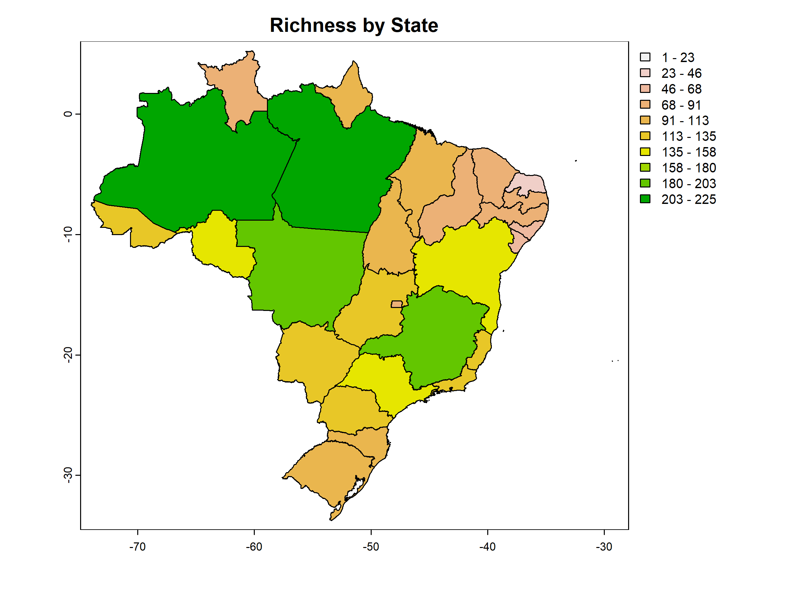

One way of organizing biodiversity data is by using presence-absence matrices (PAMs), where a one represents the presence of species j in cell i, and a zero indicates absence. From a PAM, we can estimate a variety of metrics related to biodiversity patterns, including richness, range size, and composition. For a comprehensive list of biodiversity metrics, refer to the PAM_indices function in the biosurvey package.
Before you begin, use the load_faunabr function to load
the data. For more detailed information on obtaining and loading the
data, please refer to 1. Getting started
with faunabr
library(faunabr)
library(terra)
#Folder where you stored the data with the function get_faunabr()
#Load data
bf <- load_faunabr(data_dir = my_dir,
data_version = "latest",
type = "short") #short version
#> Loading version 1.3The fauna_pam() function facilitates the utilization of
species distribution information in Fauna do Brazil to generate a PAM.
Each site represents a brazilian state or a country. In addition to the
PAM, the function also provides a summary and a SpatVector containing
the number of species in each site.
As an example, lets obtain a PAM consisting of all mammal species natives to Brazil:
#Select native species of mammals with confirmed occurrence in Brazil
br_mammals <- select_fauna(data = fauna_data,
include_subspecies = FALSE, phylum = "all",
class = "Mammalia",
order = "all", family = "all",
genus = "all",
lifeForm = "all", filter_lifeForm = "in",
habitat = "all", filter_habitat = "in",
states = "all", filter_states = "in",
country = "BR", filter_country = "in",
origin = "all", taxonomicStatus = "accepted")
#Get presence-absence matrix in states and countries
pam_mammals <- fauna_pam(data = br_mammals, by_state = TRUE,
by_country = FALSE,
remove_empty_sites = TRUE,
return_richness_summary = TRUE,
return_spatial_richness = TRUE,
return_plot = TRUE)
#Visualize (as tibble) the PAM for the first 5 species and 7 sites
tibble::tibble(pam_mammals$PAM[1:7, 1:5])
#> # A tibble: 7 × 5
#> states `Platyrrhinus aurarius` `Kannabateomys amblyonyx` `Callicebus lucifer` `Cerradomys maracajuensis`
#> <fct> <dbl> <dbl> <dbl> <dbl>
#> 1 AM 1 0 1 0
#> 2 ES 0 1 0 0
#> 3 MG 0 1 0 1
#> 4 PR 0 1 0 0
#> 5 RJ 0 1 0 0
#> 6 RS 0 1 0 0
#> 7 SC 0 1 0 0Since return_richness_summary is set to TRUE, the function also returns a data frame containing the number of species per site.
#Visualize (as tibble) the richness summary table
tibble::tibble(pam_mammals$Richness_summary[1:7,])
#> # A tibble: 7 × 3
#> states richness
#> <fct> <dbl>
#> 1 AM 225
#> 2 ES 120
#> 3 MG 188
#> 4 PR 116
#> 5 RJ 133
#> 6 RS 105
#> 7 SC 101If return_spatial_richness is set to TRUE, the function will return a SpatVector containing the number of species per site. Additionally, when return_plot is also set to TRUE, the function returns a plot. 